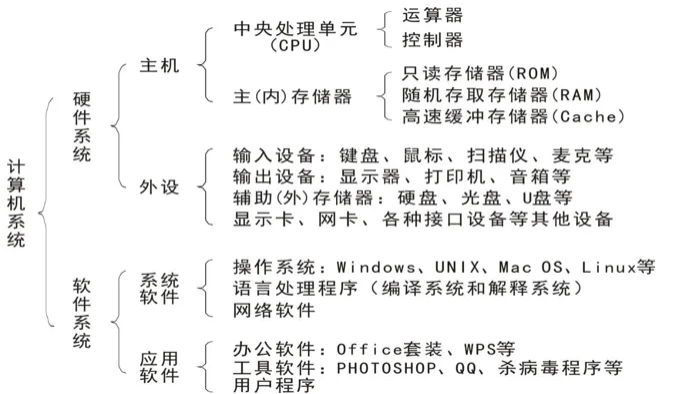
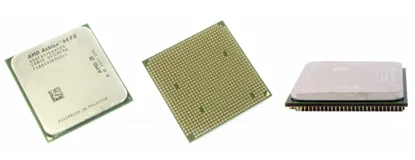
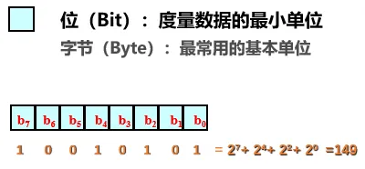
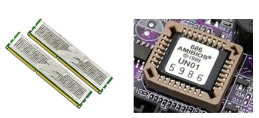
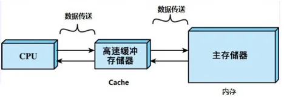
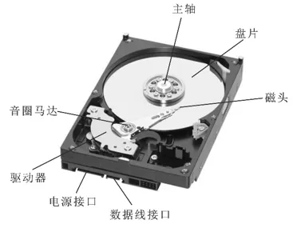
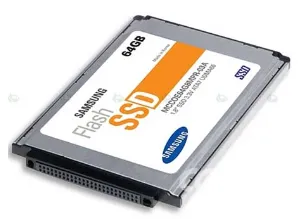
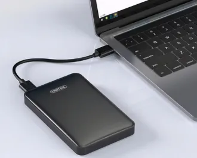
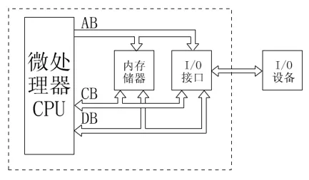

第2章 计算机体系基本结构
计算机系统简介
计算机系统由 硬件 和 软件 组成。
- 硬件：计算机的实体部分，是指构成计算机的所有物理部件，包括各种元器件、电路板卡、机械装置以及各种连接件，是看得见、摸得着的硬设备。
- 软件：看得见但摸不着，例如常用的浏览器、微信、QQ、PPT 等。软件是管理和控制计算机执行各种操作的所有程序、数据、文档资料的总称。

计算机系统组成
计算机硬件采用 冯·诺依曼结构，由五个部分组成：
- 输入设备
- 输出设备
- 存储器
- 运算器
- 控制器
其中：
- 运算器 + 控制器 = CPU
- 输入、输出设备（I/O 设备）又被称为外围（部）设备
CPU：中央处理器

**CPU（Central Processing Unit，中央处理器）**由运算器、控制器和一些寄存器组成，是计算机系统的核心。
- 运算器：对数据进行运算和加工，完成算术和逻辑运算。
- 控制器：计算机的指挥中心，控制各部分协调工作，完成对指令的解释和执行。
CPU 的主要性能指标
主频
主频是指计算机主时钟在一秒钟内发出的脉冲数，在很大程度上决定了计算机的运算速度。主频的单位一般是 GHz。
教材示例：
Intel Core i5 2300 四核处理器（2.8GHz / 6MB 高速缓存）
其中：
Intel（英特尔）：CPU 品牌Core（酷睿）：产品系列i5 2300：CPU 型号四核处理器：CPU 内集成了 4 个处理核心2.8GHz：CPU 主频6MB 高速缓存：CPU 内置了 6MB 高速缓存
字长
字长是指计算机能够直接处理的二进制数据的位数，单位为 位（bit）。
计算机的字长直接影响计算机的精度、功能和速度。
平常所说的 32 位机、64 位机，指的就是 32 位字长、64 位字长。
存储器
存储器是计算机的记忆部件，用于存放程序和数据。
存储器可以分为：
- 主存储器
- 辅助存储器
主存储器
主存储器又称 内存 或 主存，直接与 CPU 交换信息，是计算机的工作存储器。
当前正在运行的数据和程序都必须存放在主存中。主存的特点是：
- 存取速度快
- 容量较小
- 价格较高
存储器容量是指存储器中所包含的字节数，是标志计算机处理信息能力强弱的一项技术指标。
信息存储单位
在计算机内部，信息都是用二进制形式进行存储、运算、处理和传送的。
位（bit）
信息的最小单元称为 位（bit）。每一个位是二进制中的一个数位，代表两个状态：0 和 1。
字节（Byte）
**字节（Byte，简称 B）**是计算机存储的基本单位。
每个字节可以存储 8 位二进制信息。
常用单位换算：
| 单位 | 换算关系 |
|---|---|
| 1 Byte | 8 bit |
| 1 KB | 210 B = 1024 B |
| 1 MB | 1024 KB |
| 1 GB | 1024 MB |
| 1 TB | 1024 GB |

这里使用 HTML 的 <sup> 表示指数，避免依赖额外数学公式插件即可在 MDX 中正常渲染。
机器字（word）
字是位的组合，并作为一个独立的信息单位处理。
字又称为计算机字，它取决于机器的类型、字长以及使用者的要求。常用固定字长有：
- 8 位
- 16 位
- 32 位
RAM、ROM 和 Cache
内存主要由以下三类存储器构成：
RAM
**RAM（随机存取存储器）**是一种读写存储器。
- 内容可以随时读出
- 可以随时写入新的信息
- 断电后不能保留数据
常见例子：内存条。
ROM
**ROM（只读存储器）**是一种内容只能读出而不能写入和修改的存储器。
- 信息通常在制作存储器时写入
- 断电后信息不会丢失
教材举例：BIOS。
Cache
**Cache（高速缓冲存储器）**是在 CPU 与内存之间设置的一级或二级高速、小容量存储器。
教材描述的数据访问过程为：
外存 → RAM → Cache → CPU
Cache 一般直接整合到 CPU 中。


辅助存储器
辅助存储器又称 外存储器，用于长期保存数据。
其特点包括：
- 容量一般较大
- 大部分可以移动
- 便于在不同计算机之间进行信息交流
常见外存：
- 硬盘
- 固态硬盘 SSD
- 闪存
- 光盘
- U 盘
- 移动硬盘
硬盘
硬盘由若干个硬盘片组成盘片组，上面覆盖磁性氧化物，一般固定在计算机机箱内。
教材示例：
1TB SATA2.0 7200 转，单碟容量 500GB，32MB 缓存
含义：
1TB：总存储容量SATA2.0：接口标准7200 转：硬盘每分钟转速单碟容量 500GB：每张碟片的容量32MB：缓存容量


光盘
光盘具有容量大、存取速度快、不易受干扰等特点。
按制造材料和记录信息方式，可分为：
- 只读光盘：CD-ROM
- 一次性写入光盘：CD-R
- 可擦写光盘：CD-RW

输入设备与输出设备
输入设备
- 键盘
- 鼠标
- 扫描仪
- 麦克风
输出设备
- 显示器
- 扬声器
总线
总线是一组导线，是公共通路。微型计算机中各个组成部件之间的信息传输都是通过总线来实现的。

按照总线上传输信息的不同，总线分为三类：
| 总线 | 英文缩写 | 主要作用 |
|---|---|---|
| 数据总线 | DB | 传送数据信号 |
| 地址总线 | AB | 传送地址信号 |
| 控制总线 | CB | 传送控制信号 |
1. 数据总线
数据总线用于传递数据信息。
数据总线是 双向的：
- CPU 可以向其他部件发送数据
- CPU 也可以接收来自其他部件的数据
2. 地址总线
地址总线用于传输地址信息，例如：
- 要访问的内存地址
- 某个外设的地址
由于地址通常由 CPU 提供，所以地址总线一般是 单向传输。
地址总线的位数决定了 CPU 可以直接寻址的内存范围。
例如，32 位 CPU 的地址总线通常也是 32 位，可以表示：
232 个不同的内存地址
即可访问的内存容量为 4GB。
3. 控制总线
控制总线用于传送控制信号，例如：
- CPU 向内存或输入输出接口电路发出的读写信号
- 输入输出接口电路向 CPU 发送的同步联络信号
随堂检测
单项选择题
1. 一个 32 位整型变量占用（ ）个字节。
- A. 32
- B. 128
- C. 4
- D. 8
查看答案
答案：C
2. 中央处理器（CPU）能访问的最大存储器容量取决于（ ）。
- A. 地址总线
- B. 数据总线
- C. 控制总线
- D. 实际内存容量
查看答案
答案：A
3. 计算机系统总线上传送的信号有（ ）。
- A. 地址信号与控制信号
- B. 数据信号、控制信号与地址信号
- C. 控制信号与数据信号
- D. 数据信号与地址信号
查看答案
答案：B
4. 以下哪一种设备属于输出设备（ ）。
- A. 扫描仪
- B. 键盘
- C. 鼠标
- D. 打印机
查看答案
答案：D
5. 分辨率为 1600×900、16 位色的位图，存储图像信息所需要的空间为（ ）。
- A. 2812.5KB
- B. 4218.75KB
- C. 4320KB
- D. 2880KB
查看答案
答案：A
6. 计算机存储数据的基本单位是（ ）。
- A. bit
- B. Byte
- C. GB
- D. KB
查看答案
答案：B
7. 以下不是 CPU 生产厂商的是（ ）。
- A. Intel
- B. AMD
- C. Microsoft
- D. IBM
查看答案
答案：C
8. 以下不是存储设备的是（ ）。
- A. 光盘
- B. 磁盘
- C. 固态硬盘
- D. 鼠标
查看答案
答案：D
9. 在计算机内部用来传送、存贮、加工处理的数据或指令都是以（ ）形式进行的。
- A. 二进制码
- B. 八进制码
- C. 十进制码
- D. 智能拼音码
查看答案
答案：A
10. 1MB 等于（ ）。
- A. 1000 字节
- B. 1024 字节
- C. 1000 × 1000 字节
- D. 1024 × 1024 字节
查看答案
答案：D
11. 在 PC 机中，PENTIUM（奔腾）、酷睿、赛扬等是指（ ）。
- A. 生产厂家名称
- B. 硬盘的型号
- C. CPU 的型号
- D. 显示器的型号
查看答案
答案：C
12. 微型计算机中，（ ）的存取速度最快。
- A. 高速缓存
- B. 外存储器
- C. 寄存器
- D. 内存储器
查看答案
答案：C
不定项选择题
13. CPU 访问内存的速度比访问下列哪个（些）存储设备要慢（ ）。
- A. 寄存器
- B. 硬盘
- C. 软盘
- D. 高速缓存
- E. 光盘
查看答案
答案：A、D
14. 以下哪个（些）不是计算机的输出设备（ ）。
- A. 鼠标
- B. 显示器
- C. 键盘
- D. 扫描仪
- E. 绘图仪
查看答案
答案：A、C、D
15. 以下断电之后将不能保存数据的有（ ）。
- A. 硬盘
- B. 寄存器
- C. 显存
- D. 内存
- E. 高速缓存
查看答案
答案：B、C、D、E